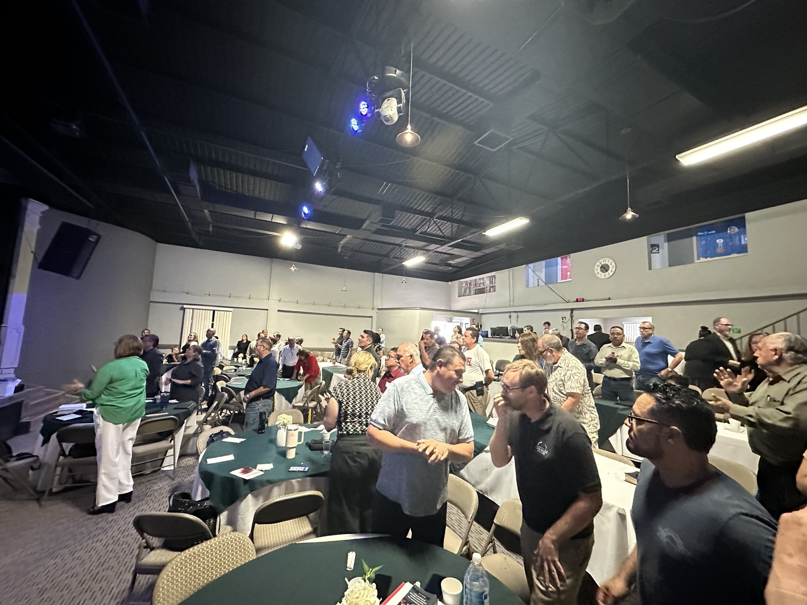
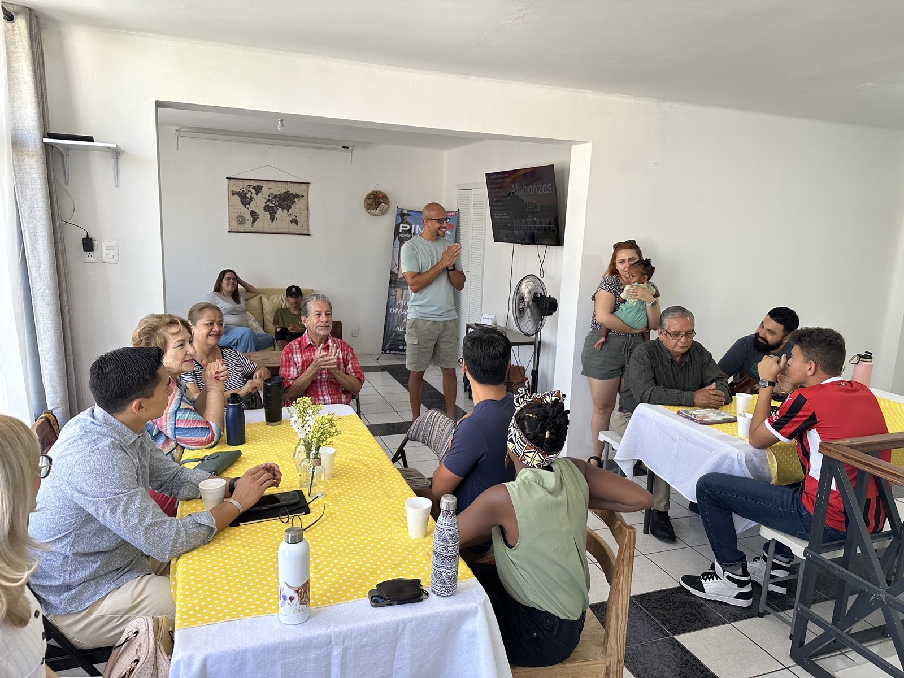
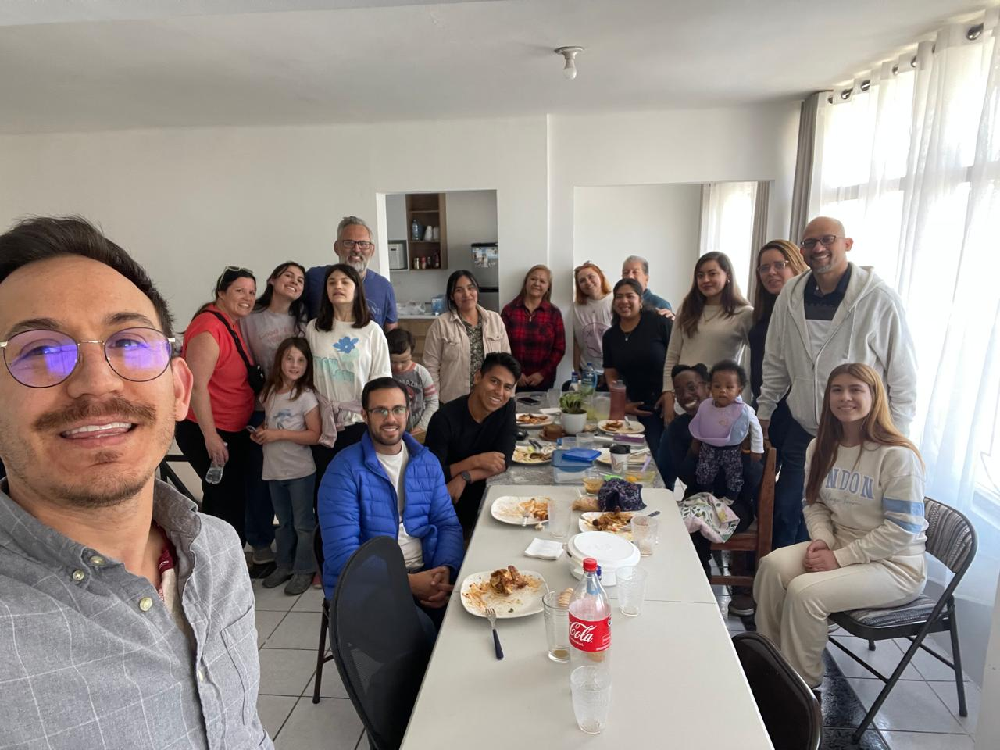
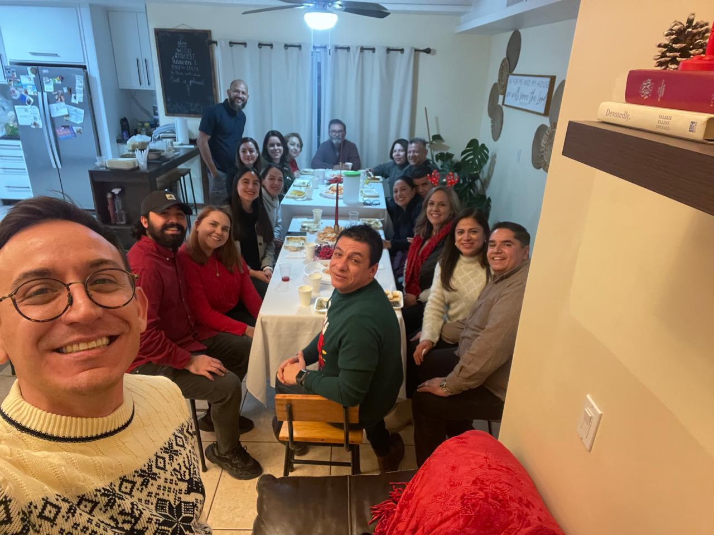
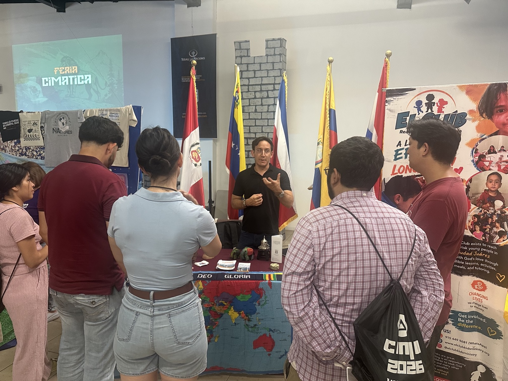
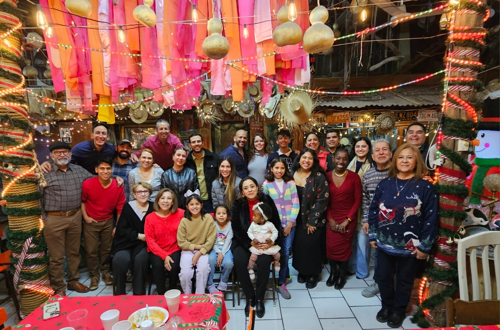

3 Programas.
Un solo propósito.
Acompañar al voluntario.
A través de VAMOS acompañamos a cada voluntario de forma integral: lo formamos, lo cuidamos y lo conectamos con las organizaciones donde servirá.
Nuestros Programas
Los 3 Programas de VAMOS
Tres programas que trabajan juntos en un mismo camino: formamos al voluntario para que sirva con excelencia, cuidamos su bienestar integral en cada etapa, y lo conectamos con una red de organizaciones que multiplica su impacto.
1. Entrenamiento y formación del voluntario
Identificamos y preparamos a cada voluntario para que llegue listo al lugar donde servirá. A través de un proceso estructurado de evaluación, entrevista y capacitación, aseguramos que sus habilidades, motivaciones y expectativas estén alineadas con la misión de la organización.
Evaluaciones
Aplicamos herramientas de diagnóstico para conocer el perfil, las fortalezas y las áreas de oportunidad de cada voluntario antes de su incorporación.
Entrevista con las evaluaciones
Acompañamos al voluntario en una sesión de retroalimentación donde revisamos juntos los resultados de su evaluación y definimos el camino a seguir.
Capacitaciones
Ofrecemos formación práctica y contextualizada que desarrolla las habilidades necesarias para servir con mayor efectividad e impacto.


2. Cuidado y desarrollo integral del voluntario
El cuidado no es un complemento; es parte esencial de la misión. Acompañamos a cada voluntario en su crecimiento personal y profesional para que pueda servir de manera efectiva y sostenible. Este cuidado está presente en todas las etapas del proceso: desde el ingreso, durante el servicio y hasta el cierre de su ciclo.
check_circle Aspectos del bienestar:
- · Acompañamiento psicológico
- · Crecimiento personal
- · Redes de apoyo
Este cuidado incluye el acompañamiento personal por profesionistas y facilitadores con experiencia en el servicio voluntario.


3. Relaciones interorganizacionales
Puentes estratégicos para colaborar entre las OSC trabajando dentro y fuera de México. Ninguna organización puede hacerlo todo sola, y los voluntarios se fortalecen cuando forman parte de una red más grande. En VAMOS tejemos alianzas entre organizaciones de la sociedad civil para compartir recursos, aprendizajes y oportunidades de servicio. Estas conexiones le dan al voluntario un respaldo más amplio, perspectivas diversas y la posibilidad de crecer junto a otros que comparten su misma vocación. El resultado: un voluntario más eficaz, conectado y resiliente.
hub Nuestra red en acción
A través de nuestras alianzas interorganizacionales, el voluntario accede a un ecosistema de apoyo que va más allá de la organización donde sirve.
- public Red de OSC nacionales e internacionales comprometidas con el impacto social.
- swap_horiz Intercambio de recursos, metodologías y buenas prácticas entre organizaciones.
- travel_explore Oportunidades de servicio dentro y fuera de México para ampliar el horizonte del voluntario.

